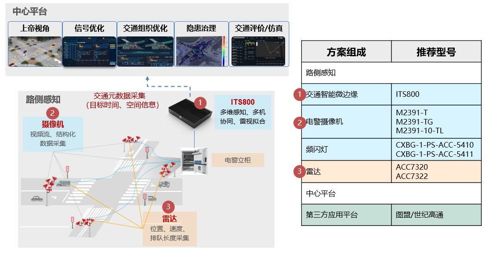

路口多个方向的感知设备，包括摄像机和雷达。摄像机负责基础违章抓拍和基础过车图片采集，保障客户的基础非现场执法的要求，同时提供视频流，提供给雷视拟合算法进行机非人等目标的视频检测；雷达负责速度、位置、流量等信息的采集，以及目标的雷达轨迹检测。
交通智能微边缘ITS800对于感知设备输出的原始数据信息进行接入、存储、雷达视频数据拟合和转发，输出车辆时空数据、过车身份数据、违法抓拍数据、按车道流量数据等多种元数据。
中心平台负责通过对元数据的收取，实现精准的轨迹数据还原，通过轨迹数据分析，快速获取如交通事件检测、交通事故报警、通行轨迹数据、精准流量数据，可以配合智慧灯控后台系统实现信控优化相关业务，最终保障安全和畅通。
